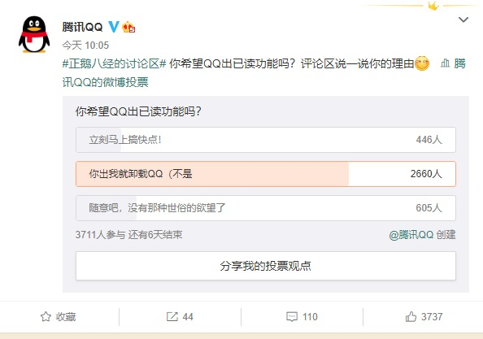
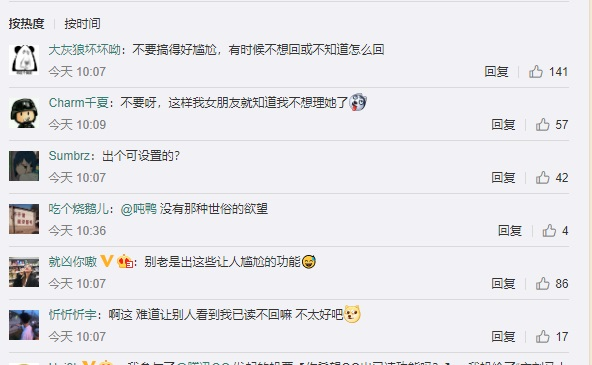

IT之家12月15日消息 腾讯 QQ 今天上午表示，你希望 QQ 出已读功能吗？并且在微博发起了相关投票。 截稿发布时，共有 3711 人参与，其中有 2660 人（71.6%）投票 “你出我就卸载 QQ”选项，看起来大部 分用户并不希望 QQ 推出已读功能。
网友回复称，不要搞得好尴尬，有时候不想回或不知道怎么回；不要呀，这样我女朋友就知道我不想理她了...
IT之家获悉，目前一些聊天软件，比如钉钉、微信企业版，只要我们和对方互发消息或者群聊消息，就可以 显示是否已读，能够通过状态来判断对方是不是已经阅读。不过“聊天已读”也让一部分用户感到厌烦和焦虑。
